30. Survey Data and Subjective Beliefs in Business Cycle Models#
30.1. Overview#
This lecture studies whether household survey data on macroeconomic expectations can discipline business cycle models, following Bhandari et al. [2025].
A central finding is that household forecasts of unemployment and inflation exhibit systematic upward biases relative to rational forecasts.
These biases, called belief wedges, are:
Persistent and countercyclical: they are larger during recessions.
Positively correlated: optimism/pessimism about unemployment and inflation move together.
One-factor in structure: a single latent state accounts for most variation across wedges.
We follow Bhandari et al. [2025] in interpreting this evidence using robust preferences (Hansen and Sargent [2001]; Hansen and Sargent [2008]).
Robust preferences provide a natural way to model pessimism and optimism: a pessimistic agent acts as if states that deliver low continuation values are more likely than they really are, while an optimistic agent overweights states that deliver high continuation values.
This is done through the distortion studied in Risk and Model Uncertainty.
When calibrated to the Michigan Survey of Consumers (1982Q1-2019Q4), this mechanism yields a time-varying belief shock that substantially reduces the unemployment volatility puzzle — the fact that standard New Keynesian models with only technology and monetary policy shocks generate far too little unemployment volatility.
In this lecture, we will cover:
How to define and measure belief wedges from household survey data.
Why optimal pessimism is a mean shift of the shock distribution, proportional to the shock’s exposure to continuation values.
How belief distortions propagate through a linearized DSGE model.
Why a calibrated belief shock helps resolve the unemployment volatility puzzle.
We start with the following imports
import datetime
from typing import NamedTuple
import numpy as np
import pandas as pd
import matplotlib.pyplot as plt
import matplotlib.dates as mdates
from scipy.linalg import solve_discrete_lyapunov
from scipy.stats import norm
30.2. Measuring belief wedges#
30.2.1. Definition#
Let \(E_t[\cdot]\) denote expectations under the data-generating (objective) probability measure and \(\tilde{E}_t[\cdot]\) denote subjective (survey) expectations.
For any scalar variable \(z_{t+1}\), the one-period belief wedge is
A positive wedge means households expect \(z_{t+1}\) to be higher than the data-generating forecast.
For unemployment and inflation, this sign convention corresponds to an upward forecast bias.
The Michigan Survey asks about outcomes one year ahead, so the empirical objects below are four-quarter wedges
We work mostly with the one-period wedge because it is the cleanest way to explain the theory; the appendix derives the multi-period version.
In the data, \(\tilde{E}_t[\cdot]\) is measured from the Michigan Survey of Consumers.
The benchmark \(E_t[\cdot]\) is computed from a quarterly VAR, with Survey of Professional Forecasters (SPF) forecasts used as a robustness check.
In the structural model, the same object is interpreted as the difference between subjective and data-generating expectations.
Thus the lecture uses one object in two related ways: empirically, a belief wedge is a survey forecast minus a statistical benchmark forecast; in the model, it is a subjective expectation minus an objective expectation.
The raw Michigan unemployment question is categorical, so Bhandari et al. [2025] convert it into a quantitative forecast using the Carlson–Parkin procedure as adapted by Mankiw et al. [2003].
30.2.2. Replicating the wedges#
Bhandari et al. [2025] document the properties of the belief wedges on the sample 1982Q1–2019Q4, and we now replicate that evidence.
The raw inputs are extracted from the paper’s publicly available replication package (doi:10.5281/zenodo.10194324, licensed CC-BY-4.0).
The first file contains the quarterly macroeconomic series for the forecasting VAR.
(Monthly series are averaged to quarterly frequency.)
The second file contains monthly Michigan Survey aggregates: the mean one-year-ahead inflation forecast and the shares of households answering “more unemployment,” “about the same,” and “less unemployment,” together with the monthly unemployment rate.
data_path = '_static/lecture_specific/subjective_beliefs_business_cycles/'
macro_q = pd.read_csv(data_path + 'bbh_macro_quarterly.csv',
index_col='YYYYQ')
mich_m = pd.read_csv(data_path + 'bbh_michigan_monthly.csv',
index_col='yyyymm')
Quarters are indexed as YYYYQ, so 19821 means 1982Q1, and months as
yyyymm.
30.2.2.1. The VAR benchmark forecast#
The data-generating forecast \(E_t[\cdot]\) comes from a quarterly VAR with two lags in nine variables:
CPI inflation over the past year,
annualized real GDP growth,
the unemployment rate,
the log change in the relative price of investment goods,
capacity utilization,
log hours worked per capita,
the consumption rate,
the investment rate, and
the federal funds rate.
q = macro_q
var_data = pd.DataFrame({
'infl_yoy': 100 * (q.CPIAUCSL / q.CPIAUCSL.shift(4) - 1),
'gdp_gr': 400 * np.log(q.GDPC1 / q.GDPC1.shift(1)),
'unrate': q.UNRATE,
'dpiric': 100 * np.log(q.PIRIC / q.PIRIC.shift(1)),
'cumfns': q.CUMFNS,
'hours_pc': 100 * np.log(q.PRS85006023 * q.CE16OV / q.CNP16OV),
'cons_r': 100 * (q.PCEND + q.PCESV) / q.GDP,
'inv_r': 100 * q.GPDI / q.GDP,
'ffr': q.FEDFUNDS,
})
output_gap = 100 * np.log(q.GDPC1 / q.GDPPOT)
The VAR is estimated by least squares on 1960Q1–2019Q4, and forecasts are iterated four quarters ahead from every quarter.
def var_forecasts(data, first=19601, last=20194, horizon=4):
"""OLS VAR(2) and iterated `horizon`-step-ahead forecasts."""
X, idx = data.values, data.index.values
est = (idx >= first) & (idx <= last)
Y_est = np.array([X[t] for t in range(2, len(idx)) if est[t]])
X_est = np.array([np.concatenate([X[t-1], X[t-2], [1.0]])
for t in range(2, len(idx)) if est[t]])
B = np.linalg.lstsq(X_est, Y_est, rcond=None)[0]
forecast = np.full_like(X, np.nan)
for t in range(1, len(idx)):
z1, z2 = X[t], X[t-1]
if np.isnan(z1).any() or np.isnan(z2).any():
continue
for h in range(horizon):
z1, z2 = np.concatenate([z1, z2, [1.0]]) @ B, z1
forecast[t] = z1
return pd.DataFrame(forecast, index=idx, columns=data.columns)
E_t4 = var_forecasts(var_data) # E_t[x_{t+4}], info through quarter t
30.2.2.2. From categorical answers to a forecast#
The Michigan unemployment question is categorical, so we convert the answer shares into a mean forecast with the Carlson–Parkin procedure.
Assume household forecasts of the change in unemployment over the next year are normally distributed across households, \(N(\mu_t, \sigma_t^2)\), and that a household answers “about the same” when its forecast lies in \([-a, a]\).
The shares answering “more” (\(q_t^u\)) and “less” (\(q_t^d\)) then satisfy
where \(\Phi\) is the standard normal cdf, and inverting the two equations gives
The threshold \(a\) scales the whole series; Bhandari et al. [2025] pin it down by comparing the implied cross-sectional dispersion with that of SPF forecasts.
We set \(a = 1.045\), which reproduces their fitted forecast series.
def carlson_parkin(share_more, share_less, a=1.045):
"""Mean forecast implied by categorical shares (normal cross-section)."""
z_up, z_down = norm.ppf(1 - share_more), norm.ppf(share_less)
σ = 2 * a / (z_up - z_down)
return a - σ * z_up
30.2.2.3. Constructing the wedges#
Timing follows the paper: responses from the first month of quarter \(t+1\) are treated as forecasts made with information through quarter \(t\).
The unemployment level forecast adds the expected change to the unemployment rate in the month the forecast is made.
Each wedge then subtracts the corresponding VAR forecast: year-over-year inflation, and the unemployment rate four quarters ahead.
Both wedges are measured in percentage points (pp), the unit we use for them throughout the lecture.
def build_wedges(mich_m, E_t4, first=19821, last=20194):
"""Survey minus VAR forecasts for unemployment and inflation."""
rows = []
for yq in E_t4.index:
if not first <= yq <= last:
continue
y, qq = yq // 10, yq % 10
mm = (y + (qq == 4)) * 100 + (qq % 4) * 3 + 1 # 1st month of qtr t+1
s = mich_m.loc[mm]
total = s.share_more + s.share_same + s.share_less
du = carlson_parkin(s.share_more / total, s.share_less / total)
rows.append((yq,
s.unrate + du - E_t4.loc[yq, 'unrate'],
s.px1_mean - E_t4.loc[yq, 'infl_yoy']))
return pd.DataFrame(rows, columns=['YYYYQ', 'unemp', 'infl']
).set_index('YYYYQ')
wedges = build_wedges(mich_m, E_t4)
wedge_u, wedge_π = wedges.unemp, wedges.infl
W = np.column_stack([wedge_u, wedge_π])
eigvals = np.linalg.eigvalsh(np.cov(W, rowvar=False))
pc1_share = eigvals[-1] / eigvals.sum()
# Quarterly dates and NBER recessions for plotting
quarters = [datetime.date(yq // 10, 3 * (yq % 10) - 2, 1)
for yq in wedges.index]
def fred_recession_spans(start, end):
"""NBER recession spans from FRED's monthly USREC indicator."""
fetch_start = pd.Timestamp(start) - pd.DateOffset(years=1)
fetch_end = pd.Timestamp(end) + pd.DateOffset(months=1)
rec = pd.read_csv(
'https://fred.stlouisfed.org/graph/fredgraph.csv?id=USREC',
parse_dates=['observation_date'],
index_col='observation_date'
)['USREC'].loc[fetch_start:fetch_end]
rec = pd.to_numeric(rec, errors='coerce').fillna(0).astype(bool)
starts = rec.index[rec & ~rec.shift(fill_value=False)]
ends = rec.index[~rec & rec.shift(fill_value=False)]
if rec.iloc[-1]:
ends = ends.append(pd.DatetimeIndex([rec.index[-1]
+ pd.offsets.MonthBegin()]))
return [(s.date(), e.date()) for s, e in zip(starts, ends)]
recessions = fred_recession_spans(quarters[0], quarters[-1])
fig, axes = plt.subplots(2, 1, figsize=(11, 6), sharex=True)
axes[0].plot(quarters, wedge_u, color='steelblue', linewidth=2,
label='Unemployment belief wedge')
axes[0].axhline(np.mean(wedge_u), color='steelblue', linestyle='--',
linewidth=0.8, alpha=0.7)
axes[0].set_ylabel('percentage points')
axes[0].legend(loc='upper left')
axes[1].plot(quarters, wedge_π, color='darkorange', linewidth=2,
label='Inflation belief wedge')
axes[1].axhline(np.mean(wedge_π), color='darkorange', linestyle='--',
linewidth=0.8, alpha=0.7)
axes[1].set_ylabel('percentage points')
axes[1].legend(loc='upper left')
for ax in axes:
for start, end in recessions:
ax.axvspan(start, end, color='grey', alpha=0.25, linewidth=0)
ax.axhline(0, color='black', linewidth=0.6, linestyle=':')
ax.xaxis.set_major_locator(mdates.YearLocator(5))
ax.xaxis.set_major_formatter(mdates.DateFormatter('%Y'))
ax.set_xlim(quarters[0], quarters[-1])
plt.tight_layout()
plt.show()
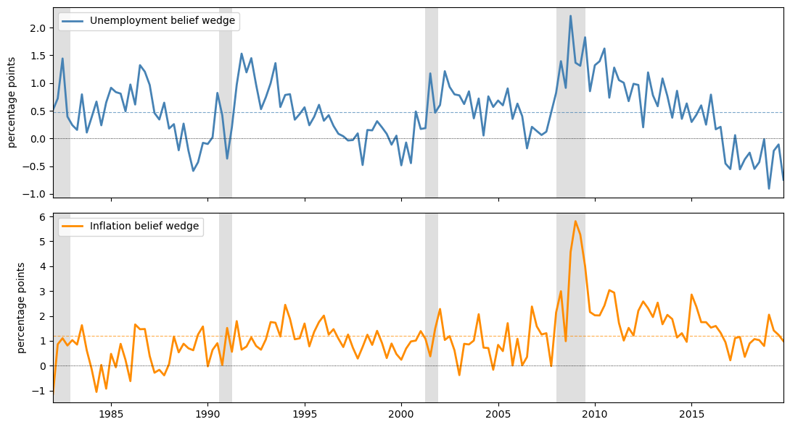
Fig. 30.1 replicated belief wedges, 1982Q1-2019Q4#
Both wedges are positive most of the time and both rise during the shaded NBER recessions.
It suggests that households persistently overpredict unemployment and inflation.
fig, ax = plt.subplots()
sc = ax.scatter(wedge_u, wedge_π, c=range(len(wedges)), cmap='RdYlGn_r',
alpha=0.7, s=20)
plt.colorbar(sc, ax=ax, label='quarter (dark = recent)')
ax.set_xlabel('unemployment wedge (pp)')
ax.set_ylabel('inflation wedge (pp)')
corr = np.corrcoef(wedge_u, wedge_π)[0, 1]
ax.text(0.05, 0.90,
f'correlation = {corr:.2f}\nPC1 share = {pc1_share:.3f}',
transform=ax.transAxes, fontsize=11)
plt.tight_layout()
plt.show()
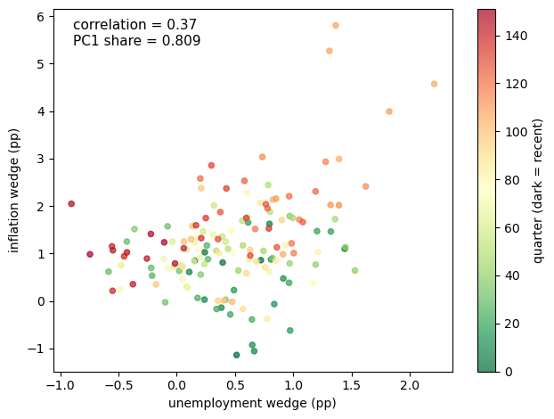
Fig. 30.2 one-factor structure of belief wedges#
The scatter plot shows the one-factor structure.
Each point is one quarter, with the horizontal coordinate equal to the unemployment wedge and the vertical coordinate equal to the inflation wedge.
The points form an upward-sloping cloud rather than a line: a common pessimism factor drives both wedges, while survey noise and other idiosyncratic variation keep them from being collinear.
The reported PC1 share of 0.809 is computed from the raw covariance matrix of the two replicated wedges, so it reflects both their correlation and the larger variance of the inflation wedge.
Bhandari et al. [2025] report 78.6% under their preferred normalization; depending on the normalization, the first component explains roughly 79–81% of the joint variation.
30.2.3. Empirical facts#
The figures above show three key empirical facts about the belief wedges:
Both wedges are positive on average: households expect higher unemployment and higher inflation than the rational forecast.
Both wedges are countercyclical: they rise during every NBER recession in the sample.
The wedges are positively correlated and share one dominant factor: the first principal component explains about four-fifths of their joint variation.
A positive unemployment wedge is naturally read as pessimism, since unemployment is high in bad times.
The positive inflation wedge carries the same interpretation because households regard high inflation as a feature of bad times.
The same one-factor pattern appears in the cross section.
This evidence supports the interpretation that the wedges reflect a common pessimism/optimism component rather than two unrelated forecast mistakes.
These moments are the calibration targets for the belief shock \(\theta_t\), the pessimism parameter formalized in the next section.
The code below also defines two wedge loadings, \(c_u\) and \(c_\pi\), that the model illustrations later in the lecture use to map \(\theta_t\) into wedges.
In the full model these loadings are endogenous equilibrium objects, covariances between shocks and continuation values, but here we set them directly so that the implied wedges equal the empirical means of 0.52 and 1.22 pp at \(\theta_t = \mu_\theta\).
# Belief-shock calibration from the paper
μ_θ = 5.64 # mean of belief-shock parameter θ
ρ_θ = 0.714 # AR(1) persistence: autocorrelation of the wedges' first PC
σ_θ = 4.3 # innovation volatility
# Wedge loadings used later in the model illustrations
# In the full model these are equilibrium objects
c_u = 0.52 / μ_θ
c_π = 1.22 / μ_θ
30.3. A model of pessimism#
Before turning to the theory, the table below collects the notation used in the rest of the lecture.
Symbol |
Meaning |
|---|---|
\(x_t\) |
state (a vector in general; log consumption in the scalar example) |
\(\bar x\) |
steady state of the state; \(x_{1t}\) is the first-order deviation from \(\bar x\) |
\(w_{t+1}\) |
standard normal innovation under the data-generating measure |
\(m_{t+1}\) |
likelihood ratio that distorts the data-generating measure |
\(\theta_t\) |
belief factor: \(\theta_t > 0\) is pessimism, \(\theta_t < 0\) is optimism |
\(\bar\theta\) |
loading of the belief factor on the state, \(\theta_t = \bar\theta x_t\) |
\(\mu_\theta\), \(\rho_\theta\), \(\sigma_\theta\) |
mean (\(\mu_\theta = \bar\theta \bar x\)), persistence, and innovation volatility of \(\theta_t\) |
\(v_t\), \(v_x\), \(v_q\) |
continuation value, its slope in the state, and its constant term |
\(\nu_t\) |
subjective mean shift of the innovation \(w_{t+1}\) |
\(\Delta_t^{(\tau)}(z)\) |
\(\tau\)-period belief wedge for variable \(z\) |
30.3.1. Robust preferences#
Why would households have systematically biased beliefs?
One answer comes from robust control or multiplier preferences (Hansen and Sargent [2001], Hansen and Sargent [2008]).
Recall that an agent represented by multiplier preferences solves
Here \(m_{t+1}\) is a likelihood ratio (Radon–Nikodym derivative) that distorts the reference measure, and the last term is an entropy penalty that keeps the distortion from being too extreme.
Assume state vector \(x_t \in \mathbb{R}^n\) follows a Markov law of motion
where \(w_{t+1} \sim N(0, I_k)\) is i.i.d. under the data-generating measure, and the penalty parameter is linear in the state:
for a \(1 \times n\) vector of parameters \(\bar\theta\).
The scalar \(\theta_t\) controls the direction and strength of the belief tilt.
The minimization problem above corresponds to \(\theta_t > 0\): larger \(\theta_t\) means more pessimism.
Because \(\theta_t\) is linear in the state, it can turn negative, in which case the inner problem becomes a maximization that tilts probability toward high-continuation-value states, which corresponds to optimism.
The inner minimization has a closed-form solution.
Minimizing \(E_t[m_{t+1} v_{t+1}] + \frac{1}{\theta_t} E_t[m_{t+1} \log m_{t+1}]\) state by state subject to \(E_t[m_{t+1}] = 1\) gives the first-order condition
where \(\lambda_t\) is the multiplier on the constraint, so \(m_{t+1} \propto \exp(-\theta_t v_{t+1})\) and the constraint pins down the normalization:
Since \(m_{t+1}^*\) assigns higher weight to states where \(v_{t+1}\) is low (bad outcomes), pessimistic agents effectively over-weight recessions in their probability assessments.
Substituting \(m_{t+1}^*\) back into the recursion gives the equivalent risk-sensitive form
which replaces the expected continuation value with a soft minimum: as \(\theta_t \to 0\) it reduces to \(u(x_t) + \beta E_t[v_{t+1}]\), and as \(\theta_t \to \infty\) it approaches the worst case over states in a bounded or finite-state setting.
(With unbounded Gaussian shocks, the soft minimum instead falls without bound.)
In the robust-control literature, this distortion expresses fear of model misspecification.
Bhandari et al. [2025] instead take the recursion as a model of pessimism and optimism, and let survey data discipline the process for \(\theta_t\).
Survey data also resolve an identification problem.
With log period utility, these preferences are mathematically equivalent to Epstein–Zin preferences with time-varying risk aversion \(\gamma_t = \theta_t + 1\), so asset prices and macroeconomic aggregates alone cannot distinguish time-varying pessimism from time-varying risk premia.
Survey forecasts can: fluctuations in rational risk premia leave forecasts unbiased, whereas subjective beliefs show up directly as belief wedges.
30.3.2. Connection to the belief wedge#
The belief wedge is the expected deviation between subjective and objective forecasts.
Using \(\tilde{E}_t[\cdot] = E_t[m_{t+1}^* \cdot]\):
The last equality holds because \(E_t[m_{t+1}^*] = 1\), so \(E_t[m^*_{t+1} z_{t+1}] - E_t[z_{t+1}] = E_t[m^*_{t+1} z_{t+1}] - E_t[m^*_{t+1}]\,E_t[z_{t+1}]\).
So the belief wedge equals the covariance between the distorted likelihood ratio and the variable of interest.
When \(v_{t+1}\) is high in states where \(z_{t+1}\) is also high, \(m_{t+1}^*\) will be low in those states, making the covariance negative (i.e. the agent underestimates good-state variables).
For unemployment (which varies inversely with good economic outcomes), the wedge is positive: pessimists expect higher unemployment than the model predicts.
30.3.3. Illustration: optimal belief distortion#
We now compute, in the smallest model that can carry them, the risk-sensitive recursion, the optimal distortion \(m_{t+1}^*\), and the belief wedge in closed form.
The payoff is the central formula of the lecture: optimal pessimism is a mean shift of the shock distribution, equal to \(-\theta_t\) times the exposure of the continuation value to the shock.
Consider an endowment economy in which log consumption \(x_t\) follows the linear process below.
Here \(\rho_x\) is the persistence of the state, \(\sigma_x\) is the standard deviation of its innovation, and period utility is \(u(x_t) = (1 - \beta)x_t\) for log utility in consumption.
The calculation has four steps:
guess an affine continuation value;
evaluate the risk-sensitive recursion in closed form;
derive the optimal belief distortion and the wedge it implies;
solve for the value-function slope, first with a fixed \(\theta\) and then with a state-dependent \(\theta_t\).
Steps 1–3 treat the current value of \(\theta_t\) as given.
With linear dynamics, Gaussian shocks, and linear utility, the continuation value is affine in the state, so we guess \(v_t = v_x x_t + v_q\) and verify the guess by substitution.
(The affine guess with constant coefficients is exact when \(\theta\) is constant; when \(\theta_t\) varies over time, it requires the first-order approximation of Bhandari et al. [2025].)
The slope \(v_x = \partial v_t / \partial x_t\) measures how much the agent values an extra unit of the state.
We solve it from the recursion in Step 4.
Since \(-\theta_t v_{t+1} = -\theta_t(v_x \rho_x x_t + v_q) - \theta_t v_x \sigma_x w_{t+1}\) is linear in the standard normal shock, the moment generating function \(E[\exp(a w)] = \exp(a^2/2)\) evaluates the expectation in closed form:
Pessimism subtracts half of \(\theta_t\) times the conditional variance of continuation values from the ordinary expectation, so it acts like an endogenous discount on risky continuation utilities.
The same linearity pins down the optimal distortion.
Writing \(\alpha_t = -\theta_t v_x \sigma_x\), the likelihood ratio becomes
which is exactly the density of \(N(\alpha_t, 1)\) divided by the density of \(N(0, 1)\).
Pessimism is therefore a mean shift: under the subjective measure,
The drift \(\nu_t\) is the negative of the pessimism parameter times the exposure of the continuation value to the shock.
The agent tilts beliefs exactly in the direction that hurts most, by an amount the entropy penalty limits.
The belief wedge for the state follows immediately:
Here \(\tilde E_t\) denotes expectation under the subjective measure implied by \(m_{t+1}^*\), while \(E_t\) denotes expectation under the data-generating measure.
When \(v_x > 0\) (high consumption states are good) and \(\theta_t > 0\) (pessimism), the wedge is negative, so the agent underestimates future consumption.
For a variable that enters the value function with a negative sign, such as unemployment, the same pessimism generates a positive wedge.
It remains to pin down the slope \(v_x\) (Step 4), and here the distinction between a fixed and a state-dependent pessimism parameter matters.
Case 1: fixed \(\theta\).
Suppose first that \(\theta_t = \theta\) is a constant.
Substituting the closed-form recursion back into the Bellman equation gives
The variance penalty \(-\frac{\theta}{2} v_x^2 \sigma_x^2\) does not involve \(x_t\), so matching coefficients on \(x_t\) gives the rational-expectations slope \(v_x = u_x / (1 - \beta\rho_x)\) with \(u_x = 1 - \beta\), while the penalty only lowers the constant \(v_q\).
With constant pessimism, the agent tilts beliefs, but the marginal value of the state is unchanged.
Case 2: state-dependent \(\theta_t\).
Now suppose, as in Bhandari et al. [2025], that pessimism moves with the state,
where \(\bar x\) is the steady state and \(x_t\) the deviation from it; we normalize \(\bar x = 1\), so that the steady-state pessimism level is \(\mu_\theta = \bar\theta \bar x = \bar\theta\).
The variance penalty is now proportional to the state,
so it contributes to the coefficient on \(x_t\), and matching coefficients yields the Riccati equation
The quadratic term is the price of state-dependent pessimism: it lowers the marginal value of the state relative to the rational-expectations value \(v_x^{RE} = u_x / (1 - \beta\rho_x)\).
If \(\theta_t\) were fixed, the same variance penalty would affect only the constant term, as in Case 1; the Riccati term in the slope exists precisely because pessimism varies with the state.
We now turn this illustration into code, building it up from small pieces.
Because the quantitative model uses the state-dependent specification, the code implements Case 2.
The first ingredient is the slope \(v_x\) of the continuation value.
It solves the scalar Riccati equation, which we write as a quadratic \(a v_x^2 + b v_x + c = 0\) and solve with the quadratic formula.
We keep the root that collapses to the rational-expectations value \(v_x^{RE} = u_x / (1 - \beta\rho_x)\) as the pessimism parameter \(\mu_\theta \to 0\).
def solve_vx(β, ρ_x, σ_x, μ_θ):
"""
Solve the scalar Riccati equation for the value-function slope vx:
vx = u_x - (β/2) μ_θ σ_x**2 vx**2 + β ρ_x vx, with u_x = 1 - β.
"""
u_x = 1.0 - β # marginal utility of log consumption
vx_re = u_x / (1.0 - β * ρ_x) # rational-expectations (θ = 0) value
# Coefficients of a vx**2 + b vx + c = 0
a = 0.5 * β * σ_x**2 * μ_θ
b = 1.0 - β * ρ_x
c = -u_x
if abs(a) < 1e-14: # no pessimism: equation is linear
return vx_re
disc = b**2 - 4.0 * a * c
if disc < 0: # no real root: fall back to RE
return vx_re
# Keep the root closest to the rational-expectations value
r1 = (-b + np.sqrt(disc)) / (2.0 * a)
r2 = (-b - np.sqrt(disc)) / (2.0 * a)
return r1 if abs(r1 - vx_re) < abs(r2 - vx_re) else r2
We store the primitives in a NamedTuple, together with the solved slope
\(v_x\), and use create_belief_model to build an instance.
class BeliefModel(NamedTuple):
β: float # discount factor
ρ_x: float # persistence of log consumption
σ_x: float # volatility of the consumption innovation
μ_θ: float # mean of the belief-shock parameter θ
ρ_θ: float # AR(1) persistence of θ
σ_θ: float # volatility of the θ innovation
vx: float # slope of the linearized continuation value
def create_belief_model(β=0.994, ρ_x=0.85, σ_x=0.005,
μ_θ=5.64, ρ_θ=0.714, σ_θ=4.3):
"""Build a belief model, solving the Riccati equation for vx."""
vx = solve_vx(β, ρ_x, σ_x, μ_θ)
return BeliefModel(β=β, ρ_x=ρ_x, σ_x=σ_x,
μ_θ=μ_θ, ρ_θ=ρ_θ, σ_θ=σ_θ, vx=vx)
Two functions map a value of \(\theta_t\) into the implied distortion.
The drift \(\nu_t = -\theta_t v_x \sigma_x\) is the mean shift of the shock under the subjective measure; the wedge \(\Delta_t^{(1)}(x) = \sigma_x \nu_t\) is the resulting forecast bias for the state.
def belief_drift(model, θ):
"""Mean shift of the shock under subjective beliefs: ν = -θ vx σ_x."""
return -θ * model.vx * model.σ_x
def belief_wedge(model, θ):
"""One-period belief wedge for the state: Δ = σ_x ν = -θ vx σ_x**2."""
return model.σ_x * belief_drift(model, θ)
A last helper simulates the AR(1) belief shock \(\theta_t\).
This is a third specification of pessimism, distinct from the fixed \(\theta\) of Case 1 and the state-dependent \(\theta_t\) of Case 2: the quantitative model treats \(\theta_t\) as an exogenous AR(1) process calibrated to the survey wedges, and the appendix shows how it fits into the perturbation solution.
def simulate_θ(model, T=200, seed=42):
"""Simulate the AR(1) belief shock θ_t."""
rng = np.random.default_rng(seed)
θ = np.zeros(T)
θ[0] = model.μ_θ
for t in range(1, T):
θ[t] = ((1 - model.ρ_θ) * model.μ_θ
+ model.ρ_θ * θ[t-1]
+ model.σ_θ * rng.standard_normal())
return θ
Building the model at the baseline calibration, we compare the robust slope \(v_x\) with its rational-expectations counterpart, and report the mean belief drift and wedge.
model = create_belief_model()
vx_re = (1 - model.β) / (1 - model.β * model.ρ_x)
print(f"RE value of v_x: {vx_re:.8f}")
print(f"Robust value of v_x: {model.vx:.8f}")
print(f"Belief drift at θ_bar: ν = {belief_drift(model, model.μ_θ):.5f} "
"(standard deviations of w)")
print(f"Belief wedge at θ_bar: Δ = {belief_wedge(model, model.μ_θ) * 100:.5f} "
"(% of consumption)")
RE value of v_x: 0.03868472
Robust value of v_x: 0.03868404
Belief drift at θ_bar: ν = -0.00109 (standard deviations of w)
Belief wedge at θ_bar: Δ = -0.00055 (% of consumption)
Both the drift and the wedge are tiny at this calibration: log consumption has a small innovation standard deviation, so the exposure \(v_x \sigma_x\) of the continuation value to the shock is small, and the entropy penalty allows only a small tilt.
In the full model, the corresponding exposures of continuation values to shocks are much larger, and they generate the percentage-point wedges seen in the surveys.
The next figure illustrates the tilt.
Because the true drift \(\nu_t = -\theta_t v_x \sigma_x \approx -0.001\) is invisible on a density plot, the figure instead shifts each curve by the scaled drift \(\nu_t / \sigma_x = -\theta_t v_x\), magnifying the true shift by a factor of \(1/\sigma_x = 200\).
θ_vals = [0, model.μ_θ, 2 * model.μ_θ]
labels = ['θ = 0',
f'θ = θ_bar = {model.μ_θ:.1f} (mean)',
f'θ = 2θ_bar (pessimistic)']
colors = ['black', 'steelblue', 'firebrick']
# True drift ν = -θ vx σ_x, and the version scaled by 1/σ_x
# that the figure plots so that the shift is visible
ν_true = [belief_drift(model, θ) for θ in θ_vals]
ν_scaled = [ν / model.σ_x for ν in ν_true]
x_grid = np.linspace(-4, 4, 500)
fig, ax = plt.subplots()
for μ, label, color in zip(ν_scaled, labels, colors):
ax.plot(x_grid, norm.pdf(x_grid, loc=μ),
label=label, color=color, linewidth=2)
ax.axvline(0, color='grey', linestyle=':', linewidth=0.8)
ax.set_xlabel(
'scaled innovation shift: '
'$\\nu_t / \\sigma_x = -\\theta_t v_x$'
)
ax.set_ylabel('density')
ax.legend()
plt.tight_layout()
plt.show()
print("True and scaled subjective drifts:")
for ν, ν_s, label in zip(ν_true, ν_scaled, labels):
print(f" {label:35s} ν = {ν:9.5f} ν/σ_x = {ν_s:.4f}")
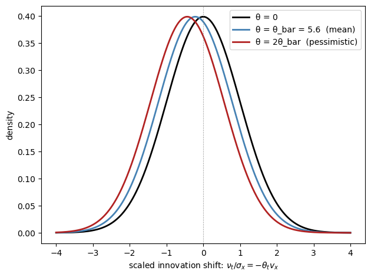
Fig. 30.3 objective and subjective shock distributions (drift scaled for visibility)#
True and scaled subjective drifts:
θ = 0 ν = 0.00000 ν/σ_x = 0.0000
θ = θ_bar = 5.6 (mean) ν = -0.00109 ν/σ_x = -0.2182
θ = 2θ_bar (pessimistic) ν = -0.00218 ν/σ_x = -0.4364
The figure shows how pessimism (higher \(\theta_t\)) shifts the perceived distribution of future shocks to the left.
The black curve is the objective distribution, centered at zero.
The blue and red curves are subjective distributions for progressively larger values of \(\theta_t\), with the mean shift drawn at the scaled drift \(\nu_t / \sigma_x\) rather than at the (tiny) true drift \(\nu_t\).
An agent with \(\theta_t > 0\) believes bad shocks are more likely than they actually are.
30.3.4. Subjective dynamics#
The mean shift changes the law of motion that agents perceive.
Substituting \(w_{t+1} = \nu_t + \tilde w_{t+1}\), where \(\tilde w_{t+1} \sim N(0, 1)\) under the subjective measure, into the dynamics of \(x_t\) gives
With the state-dependent specification of Case 2, \(\theta_t = \bar\theta(\bar x + x_t)\), collecting terms shows that subjective beliefs change both the intercept and the slope of the perceived dynamics:
For a good state (\(v_x > 0\)), pessimism adds a negative drift.
For a bad state such as unemployment (\(v_x < 0\)), the same formula raises the subjective persistence, so pessimists believe bad times last longer.
The code below compares objective and subjective forecast paths of the consumption state, starting from the steady state, holding the pessimism level fixed along the forecast path.
def forecast_paths(model, θ, x0=0.0, τ_max=20):
"""Objective and subjective forecast paths of the state x."""
ν = belief_drift(model, θ) # subjective mean of the shock
obj = np.empty(τ_max + 1)
subj = np.empty(τ_max + 1)
obj[0] = subj[0] = x0
for τ in range(τ_max):
obj[τ+1] = model.ρ_x * obj[τ]
subj[τ+1] = model.ρ_x * subj[τ] + model.σ_x * ν
return obj, subj
τ_max = 20
horizons = np.arange(τ_max + 1)
θ_levels = [model.μ_θ, 2 * model.μ_θ]
labels_f = [f'subjective, θ = θ_bar', f'subjective, θ = 2θ_bar']
colors_f = ['steelblue', 'firebrick']
fig, ax = plt.subplots()
obj, _ = forecast_paths(model, 0.0, τ_max=τ_max)
ax.plot(horizons, obj * 100, color='black', linewidth=2,
label='objective forecast')
for θ, lab, c in zip(θ_levels, labels_f, colors_f):
_, subj = forecast_paths(model, θ, τ_max=τ_max)
ax.plot(horizons, subj * 100, color=c, linewidth=2,
linestyle='--', label=lab)
ax.axhline(0, color='grey', linewidth=0.7, linestyle=':')
ax.set_xlabel('forecast horizon $\\tau$ (quarters)')
ax.set_ylabel('forecast of $x_{t+\\tau}$ (%)')
ax.legend()
plt.tight_layout()
plt.show()
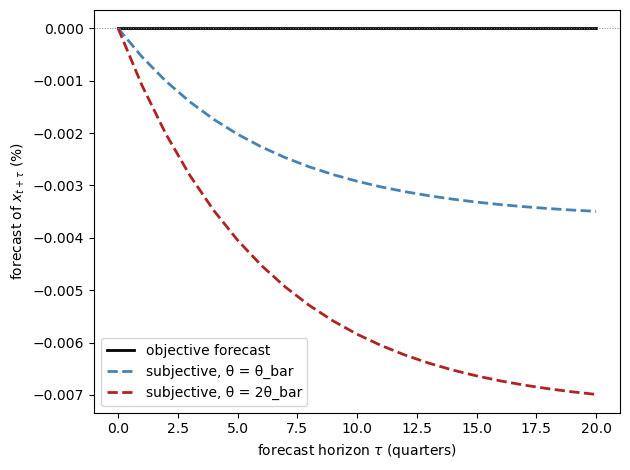
Fig. 30.4 objective and subjective forecasts of consumption#
Starting at the steady state, the objective forecast of consumption is flat at zero.
The subjective forecasts drift persistently downward, and twice as fast when pessimism is twice as high, because the constant drift \(\sigma_x \nu_t\) accumulates at the persistence \(\rho_x\).
On average the feared bad times never arrive, so subjective forecasts are systematically wrong, and that systematic error is exactly the belief wedge measured in the surveys.
This figure is the scalar version of a key picture in Bhandari et al. [2025]: after a pessimism shock in the structural model, households expect consumption to fall further and recover far more slowly than it actually does.
30.4. Linear approximation with belief distortions#
30.4.1. The perturbation method#
For quantitative analysis, Bhandari et al. [2025] extend the standard first-order perturbation method to accommodate time-varying belief distortions.
Let the state vector be \(x_t \in \mathbb{R}^n\) with objective law of motion
To first order, the belief factor \(\theta_t = \bar\theta x_t\) equals \(\bar\theta(\bar{x} + x_{1t})\).
Under the optimal belief distortion the shocks are re-centered:
where \(v_x\) is the row vector of first derivatives of the continuation value and \(\bar{x}\) is the steady state.
In a standard first-order perturbation, belief distortions would vanish from the solution.
The reason is the certainty equivalence of first-order approximations: the expansion scales shock volatility by a parameter \(\mathsf{q}\) and keeps only terms linear in \(\mathsf{q}\), so any object that works through the variance of shocks — risk premia, precautionary saving, or belief distortions — is second order and gets truncated away.
The scalar example makes the orders visible.
The optimal drift \(\nu_t = -\theta_t v_x \sigma_x\) shrinks linearly with volatility: when there is less to fear, the entropy penalty permits only a smaller tilt.
The implied wedge \(\Delta_t^{(1)}(x) = -\theta_t v_x \sigma_x^2\) is therefore quadratic in volatility — halve \(\sigma_x\) and the wedge falls by a factor of four — so it is one order smaller than the dynamics themselves and drops out of a linear solution.
A naive linearization would thus behave exactly like its rational-expectations twin: no wedges, no belief shock, and nothing for the survey data to discipline.
Bhandari et al. [2025] avoid this by scaling \(\theta_t\) jointly with the shock volatility, letting it grow like \(1/\mathsf{q}\) as volatility shrinks.
The drift \(-\theta_t (v_x \psi_w)'\) then stays of order one, the wedge becomes first order — the same order as everything else in the linear solution — and the subjective law of motion survives as an object distinct from the data-generating process; the appendix gives details.
The wedge formula comes directly from comparing the one-step-ahead objective and subjective conditional means.
Under the objective measure, \(E_t[w_{t+1}] = 0\), so
Under the subjective measure, the shock mean is \(\tilde E_t[w_{t+1}] = -\theta_t (v_x \psi_w)'\), so
For any linear variable \(z_t = \bar{z}' x_t\), the one-period belief wedge is therefore
Because the drift moves with \(\theta_t\), subjective beliefs change both the conditional mean and the persistence of the state: adverse states are more persistent under the subjective measure than under the data-generating measure.
30.4.2. Riccati equation for \(v_x\)#
The key object is \(v_x\), which solves
This is a modified Riccati equation: like the Riccati equations of linear-quadratic control, it is quadratic in the unknown \(v_x\), and the middle term vanishes under rational expectations (\(\bar\theta = 0\)), leaving the linear equation \(v_x = u_x + \beta v_x \psi_x\) with the familiar solution \(v_x = u_x (I - \beta\psi_x)^{-1}\).
Each term has an economic reading.
The first term, \(u_x\), is the marginal flow utility of the state.
The last term, \(\beta v_x \psi_x\), is the discounted marginal continuation value: an extra unit of the state today raises next period’s state by \(\psi_x\) and hence next period’s value by \(v_x \psi_x\).
The middle term is the price of state-dependent pessimism: an extra unit of state component \(j\) raises the belief factor by \(\bar\theta_j\), and each unit of the belief factor discounts the continuation value by half its conditional variance, \(v_x \psi_w \psi_w' v_x'\).
To see why the extra term has this form, focus on the continuation value.
Locally, write it as linear in next period’s state,
Since \(x_{t+1} = \psi_q + \psi_x x_t + \psi_w w_{t+1}\), the risky part of continuation value is \(v_x \psi_w w_{t+1}\), with conditional variance
Robust preferences replace the ordinary expected continuation value with an entropy-adjusted one.
For a Gaussian linear payoff, the minimization over distorted beliefs gives
Thus the agent subtracts a variance penalty from continuation value.
Because \(\theta_t = \bar\theta x_t\), the penalty is linear in the state — the mechanism of Case 2 in the scalar illustration — so matching the coefficient on \(x_t\) in the Bellman equation adds the term
The term is quadratic in \(v_x\) because the variance of the continuation value depends on the square of its exposure to shocks, \(v_x \psi_w\).
Indeed, this equation is the vector version of the scalar Riccati equation:
setting \(\psi_x = \rho_x\), \(\psi_w = \sigma_x\), and \(\bar\theta = \mu_\theta\)
(all scalars) recovers the equation solved by solve_vx.
And if \(\theta_t\) were a constant, the variance penalty would not depend on \(x_t\), the middle term would disappear from the coefficient-matching equation, and only the constant term of the value function would change.
In that case, it collapses to the linear equation of Case 1.
30.4.3. One-factor structure#
An important consequence of the formula for \(\Delta_t^{(1)}(z)\) is that the time variation in all belief wedges is driven by the single scalar belief factor \(\theta_t \approx \bar\theta(\bar{x} + x_{1t})\).
The cross-sectional loadings \(-\bar{z}'(\psi_w\psi_w')v_x'\) are fixed by the model’s structural parameters.
The loadings are not free parameters: they equal covariances of shocks with the continuation value, objects that the equilibrium of the model determines.
The only free parameters describing beliefs are the three governing the \(\theta_t\) process, so every additional surveyed variable adds an overidentifying restriction on the model.
This theoretical prediction matches the empirical finding that one principal component explains about four-fifths of the joint variation in the unemployment and inflation wedges.
The code below illustrates the one-factor structure, but with a shortcut: in place of the model-implied loadings \(-\bar{z}'(\psi_w\psi_w')v_x'\), it uses the empirical loadings \(c_u\) and \(c_\pi\) defined earlier, so the lines pass through the empirical mean wedges at \(\theta = \mu_\theta\).
In the full model the loadings are endogenous, and the paper’s structural benchmark implies mean wedges of 0.55 and 0.90 rather than the data values 0.52 and 1.22.
θ_grid = np.linspace(0, 20, 200)
# Empirical loadings
loading_u = c_u # 0.52 / 5.64 pp per unit of θ (unemployment)
loading_π = c_π # 1.22 / 5.64 pp per unit of θ (inflation)
wedge_u_grid = loading_u * θ_grid
wedge_π_grid = loading_π * θ_grid
fig, axes = plt.subplots(1, 2, figsize=(11, 4))
axes[0].plot(θ_grid, wedge_u_grid, color='steelblue', linewidth=2,
label='$\\Delta^{(1)}(u)$')
axes[0].plot(θ_grid, wedge_π_grid, color='darkorange', linewidth=2,
label='$\\Delta^{(1)}(\\pi)$')
axes[0].axvline(μ_θ, color='grey', linestyle='--', linewidth=0.9,
label=f'$\\bar{{\\theta}} = {μ_θ}$')
axes[0].set_xlabel('belief-shock level $\\theta$')
axes[0].set_ylabel('belief wedge (pp)')
axes[0].legend()
θ_sim = simulate_θ(model, T=400, seed=7)
wu_sim = loading_u * θ_sim
w_π_sim = loading_π * θ_sim
axes[1].scatter(wu_sim, w_π_sim, c=θ_sim, cmap='Blues', alpha=0.6, s=12)
axes[1].set_xlabel('unemployment wedge (pp)')
axes[1].set_ylabel('inflation wedge (pp)')
plt.tight_layout()
plt.show()
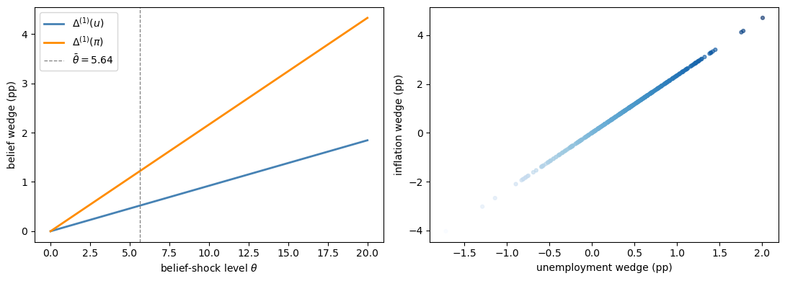
Fig. 30.5 wedge loadings implied by one factor#
The left panel plots the two one-period wedge formulas as functions of the belief shock.
Both lines slope upward, but the inflation line is steeper because the calibration assigns inflation a larger loading on \(\theta_t\).
The vertical dashed line marks the average value \(\bar{\theta}\), where the lines match the empirical mean wedges of 0.52 and 1.22 percentage points.
The right panel simulates \(\theta_t\) and plots the resulting unemployment and inflation wedges against each other.
Since both are driven by the same scalar state, the simulated points trace out an almost exact positive relation.
In the data the relation is looser because survey responses contain measurement error; a hidden-factor model that allows for such error recovers a belief factor whose path is close to the first principal component.
30.5. A reduced-form emulator of the New Keynesian model#
We now use the empirical belief factor to generate impulse responses.
The full model in Bhandari et al. [2025] is a New Keynesian model with households, Calvo price setting, search-and-matching labor frictions, Nash wage bargaining, TFP shocks, monetary-policy shocks, and the belief shock, all calibrated inside the full equilibrium system.
Beliefs matter there because consumption decisions, vacancy posting, wage bargaining, and price setting are forward-looking.
Rather than solve that system here, we use a small linear emulator that keeps only the pieces needed for transparent impulse responses:
where \(s_t = (u_t, \pi_t, y_t, \theta_t, a_t)'\) collects unemployment, inflation, output, the belief shock, and TFP, and \(\epsilon_{t+1} \sim N(0, I_3)\) contains the three structural shocks.
The matrices below are chosen to reproduce selected signs and moments from the paper; they are not obtained by solving the structural equilibrium conditions.
The belief shock follows the persistence estimated from the survey wedges, \(\rho_\theta = 0.714\).
The two wedge loadings are chosen so that \(c_u \mu_\theta = 0.52\) and \(c_\pi \mu_\theta = 1.22\) at \(\mu_\theta = 5.64\).
The entries that connect \(\theta_t\) to \(u_t\), \(\pi_t\), and \(y_t\) should be read as reduced-form summaries of the full subjective-expectations channel, calibrated to give the right signs and a reasonable scale for the belief-shock IRF: higher pessimism raises unemployment, temporarily raises inflation, and lowers output.
One difference from the structural model deserves emphasis.
Unlike the full model, this reduced-form system makes \(\theta_t\) move the wedges and the macroeconomic variables directly.
In the structural model, \(\theta_t\) matters through distorted probabilities over payoff-relevant shocks, so the presence and propagation of fundamental shocks are part of the mechanism.
We index the five state variables with named constants, so that later code can
refer to, say, the belief shock as I_THETA rather than a bare number.
# Position of each variable in the state vector s_t
I_U, I_PI, I_Y, I_THETA, I_A = 0, 1, 2, 3, 4
The object below stores the transition matrix, shock loadings, and the two wedge loadings. That is enough to compute the impulse responses.
class NKModel(NamedTuple):
A: np.ndarray # state transition matrix
B: np.ndarray # shock loadings (columns: w_θ, w_a, w_r)
c_u: float # loading of the unemployment wedge on θ
c_π: float # loading of the inflation wedge on θ
def create_nk_model():
"""Build the reduced-form NK emulator (state and shock matrices)."""
# Exogenous-process parameters from bhandari2025survey.
ρ_θ, σ_θ = 0.714, 4.3
ρ_a, σ_a = 0.840, 0.00568
# Belief-wedge loadings on θ (match the mean empirical wedges)
c_u = 0.52 / 5.64
c_π = 1.22 / 5.64
# Impact of the belief shock θ on the endogenous variables (per unit of θ)
φ_u_θ = 0.00648 / σ_θ
φ_π_θ = 0.00063 / σ_θ
φ_y_θ = -0.00807 / σ_θ
# Impact of TFP on the endogenous variables
φ_u_a, φ_π_a, φ_y_a = -0.362, -0.1306, 1.0236
# Endogenous persistence (quarterly)
ρ_u, ρ_π, ρ_y = 0.35, 0.50, 0.35
A = np.array([
[ρ_u, 0, 0, φ_u_θ, φ_u_a], # unemployment
[0, ρ_π, 0, φ_π_θ, φ_π_a], # inflation
[0, 0, ρ_y, φ_y_θ, φ_y_a], # output
[0, 0, 0, ρ_θ, 0 ], # belief shock
[0, 0, 0, 0, ρ_a ], # TFP
])
# Columns: [w_θ, w_a, w_r]
B = np.array([
[0, 0, 0.5e-3], # MP -> unemployment
[0, 0, -0.1e-3], # MP -> inflation
[0, 0, -0.5e-3], # MP -> output
[σ_θ, 0, 0 ], # θ innovation
[0, σ_a, 0 ], # TFP innovation
])
return NKModel(A=A, B=B, c_u=c_u, c_π=c_π)
Impulse responses are computed by iterating \(s_{t+1} = A s_t\) from the impact column of \(B\), and the two belief wedges are read off as \(c_u \theta_t\) and \(c_\pi \theta_t\).
def irf(model, shock_idx, T=25):
"""
Impulse responses to a one-standard-deviation shock.
shock_idx : 0 = belief shock, 1 = TFP shock, 2 = monetary policy shock.
Returns the state responses together with the unemployment and inflation
wedge responses.
"""
A, B = model.A, model.B
resp = np.zeros((A.shape[0], T))
s = B[:, shock_idx].copy() # impact response
for t in range(T):
resp[:, t] = s
s = A @ s
wu = model.c_u * resp[I_THETA, :]
w_π = model.c_π * resp[I_THETA, :]
return resp, wu, w_π
nk = create_nk_model()
30.6. Quantitative results#
30.6.1. Impulse responses to the belief shock#
A positive innovation to \(\theta_t\) makes households more pessimistic.
In the full structural model, higher pessimism makes households and firms act as if bad future states are more likely.
Vacancy posting weakens, output falls, unemployment rises, and the two survey wedges jump together.
The reduced-form system below is calibrated to reproduce those signs and to make the belief wedges decay with \(\rho_\theta = 0.714\).
T_irf = 25
periods = np.arange(T_irf)
resp_θ, wu_θ, w_π_θ = irf(nk, shock_idx=0, T=T_irf)
fig, axes = plt.subplots(2, 3, figsize=(13, 7))
axes = axes.flatten()
ylabels = ['unemployment (pp)', 'inflation (pp, ann.)', 'output (%)',
'belief shock θ', 'unemployment wedge Δ(u) (pp)',
'inflation wedge Δ(π) (pp)']
series = [resp_θ[0] * 100, # unemployment in pp (fraction * 100)
resp_θ[1] * 400, # inflation ann. pp (quarterly frac * 400)
resp_θ[2] * 100, # output in % (fraction * 100)
resp_θ[3], # belief shock θ
wu_θ, # unemp. wedge (pp): c_u * θ, already in pp
w_π_θ] # infl. wedge (pp): c_π * θ, already in pp
colors = ['steelblue'] * 3 + ['purple', 'steelblue', 'darkorange']
for ax, ylabel, y, color in zip(axes, ylabels, series, colors):
ax.plot(periods, y, color=color, linewidth=2)
ax.axhline(0, color='grey', linewidth=0.7, linestyle='--')
ax.set_ylabel(ylabel)
ax.set_xlabel('quarters')
plt.tight_layout()
plt.show()
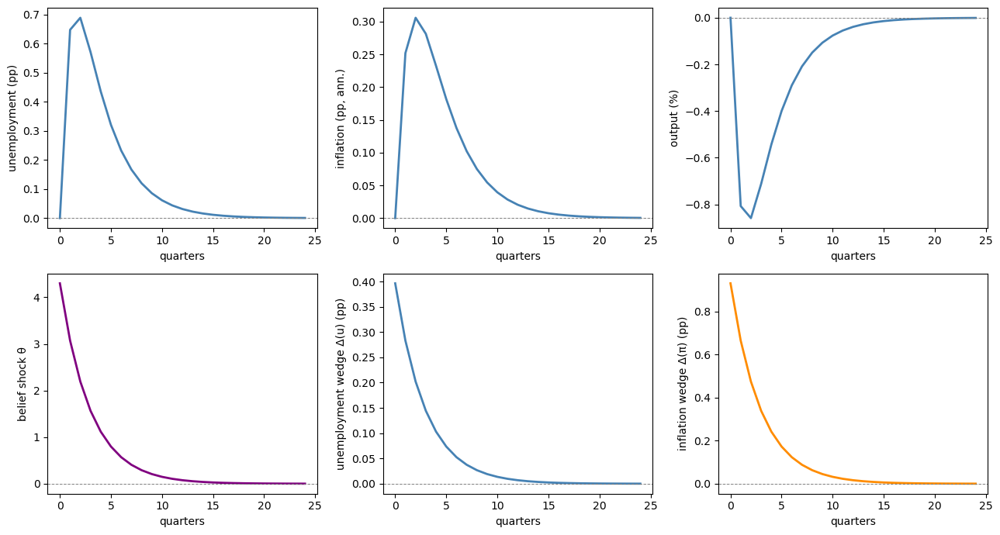
Fig. 30.6 impulse responses to a belief shock#
The first row shows the macroeconomic responses, and the second row shows the belief shock and the two implied survey wedges.
The shock raises unemployment, lowers output, and generates comoving unemployment and inflation wedges.
Inflation rises temporarily in this calibration, then decays back toward zero.
30.6.2. The unemployment volatility puzzle#
A long-standing challenge for New Keynesian models is that standard TFP and monetary policy shocks generate far too little unemployment volatility [Shimer, 2005].
In the paper’s no-belief-shock economy, TFP and monetary policy shocks produce unemployment volatility of only 0.55, compared to 1.70 in the data.
Adding the belief shock substantially closes the gap.
The emulator is calibrated to reproduce this experiment: we compute its unconditional standard deviations from the discrete Lyapunov equation, with and without the belief shock.
def simulate_nk(model, T=200, seed=42):
"""Simulate the model for T periods under the data-generating measure."""
rng = np.random.default_rng(seed)
A, B = model.A, model.B
k = B.shape[1]
s = np.zeros((A.shape[0], T))
for t in range(1, T):
s[:, t] = A @ s[:, t-1] + B @ rng.standard_normal(k)
return s
def unconditional_stds(model, include_θ_shock=True):
"""Unconditional standard deviations from the discrete Lyapunov equation."""
B_use = model.B.copy()
if not include_θ_shock:
B_use[:, 0] = 0.0 # shut down the belief shock
Σ = solve_discrete_lyapunov(model.A, B_use @ B_use.T)
return np.sqrt(np.diag(Σ))
std_full = unconditional_stds(nk, include_θ_shock=True)
std_no_θ = unconditional_stds(nk, include_θ_shock=False)
labels_vol = ['Unemployment', 'Inflation', 'Output']
idx = [I_U, I_PI, I_Y]
scale = [100, 400, 100] # convert to pp (unemployment, annualized inflation, %)
std_full_scaled = [std_full[i] * scale[j] for j, i in enumerate(idx)]
std_no_θ_scaled = [std_no_θ[i] * scale[j] for j, i in enumerate(idx)]
# Data standard deviations reported by bhandari2025survey.
data_std = [1.70, 1.37, 2.00] # unemployment, inflation, output
x = np.arange(len(labels_vol))
width = 0.25
fig, ax = plt.subplots()
ax.bar(x - width, std_no_θ_scaled, width, label='No $\\theta_t$',
color='steelblue', alpha=0.7)
ax.bar(x, std_full_scaled, width, label='Benchmark',
color='firebrick', alpha=0.7)
ax.bar(x + width, data_std, width, label='Data',
color='grey', alpha=0.7)
ax.set_xticks(x)
ax.set_xticklabels(labels_vol)
ax.set_ylabel('standard deviation (% or pp, ann.)')
ax.legend()
plt.tight_layout()
plt.show()
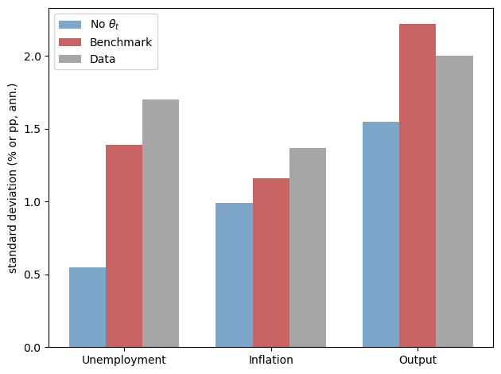
Fig. 30.7 model and data volatility comparison#
The bar chart compares three standard deviations: the emulator without the belief shock, the emulator with it (labeled “Benchmark” after the paper’s benchmark economy), and the data.
The main message is visible in the unemployment bars.
Without the belief shock, unemployment volatility is far below its empirical counterpart.
Adding the calibrated belief shock raises unemployment volatility from about 0.55 to about 1.39, moving the model much closer to the data value 1.70.
The belief shock also improves the model’s fit to the historical record.
30.6.3. Role of firms’ beliefs#
In the benchmark model, firms as well as households hold subjective beliefs.
What changes when firms instead have rational beliefs?
The key channel is through the price-setting equation.
Price-setting firms that share the household’s pessimism put extra probability weight on states with lower productivity and higher marginal costs.
The rational-firms experiment turns off belief distortions in firms’ forward-looking equations while keeping household beliefs subjective and recalibrating \(\theta_t\) so that the mean and volatility of the unemployment wedge remain comparable.
If firms have rational beliefs, they see the household pessimism shock mainly as a contraction in demand.
Inflation falls on impact, and the inflation wedge is too small.
Wages also fall by less.
Under Nash bargaining, the wage splits the gap between the firm’s subjective valuation of the match and the worker’s subjective value of unemployment; a rational firm does not mark down its valuation when \(\theta_t\) rises, so the perceived surplus stays larger and the bargained wage declines less.
Firm beliefs therefore strengthen the comovement between the unemployment wedge and the inflation wedge, which is needed to match the data.
30.6.4. Countercyclicality of wedges#
A final important prediction is that belief wedges are countercyclical.
Recessions are periods of high \(\theta_t\), which raises both the unemployment wedge and the inflation wedge simultaneously.
The code below simulates a long run of the model and shows this property:
sim = simulate_nk(nk, T=400, seed=99)
θ_sim = sim[I_THETA]
y_sim = sim[I_Y] * 100
wu_sim_series = nk.c_u * θ_sim
w_π_sim_series = nk.c_π * θ_sim
fig, axes = plt.subplots(3, 1, figsize=(11, 8), sharex=True)
axes[0].plot(y_sim, color='steelblue', linewidth=2, label='Output gap (%)')
axes[0].axhline(0, color='grey', linestyle='--', linewidth=0.7)
axes[0].set_ylabel('%')
axes[0].legend(loc='upper right')
axes[1].plot(wu_sim_series, color='firebrick', linewidth=2,
label='Unemployment belief wedge (pp)')
axes[1].set_ylabel('pp')
axes[1].legend(loc='upper right')
axes[2].plot(w_π_sim_series, color='darkorange', linewidth=2,
label='Inflation belief wedge (pp)')
axes[2].set_ylabel('pp')
axes[2].legend(loc='upper right')
axes[2].set_xlabel('quarter')
plt.tight_layout()
plt.show()
corr_u = np.corrcoef(y_sim, wu_sim_series)[0, 1]
corr_π = np.corrcoef(y_sim, w_π_sim_series)[0, 1]
print(f"Corr(output gap, unemployment wedge) = {corr_u:.3f} "
f"(data: -0.49)")
print(f"Corr(output gap, inflation wedge) = {corr_π:.3f} "
f"(data: -0.30)")
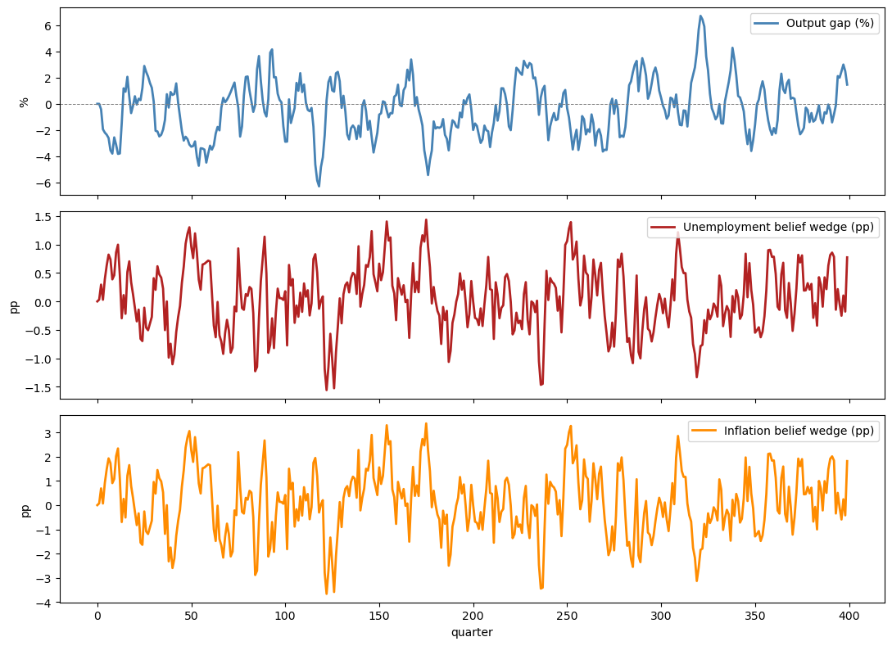
Fig. 30.8 simulated countercyclicality of belief wedges#
Corr(output gap, unemployment wedge) = -0.433 (data: -0.49)
Corr(output gap, inflation wedge) = -0.433 (data: -0.30)
The top panel plots the simulated output gap, while the middle and bottom panels plot the unemployment and inflation wedges generated by the same simulation.
Periods with weak output tend to coincide with elevated wedges.
The simulated correlations are negative, confirming the countercyclicality predicted by the model and documented in the survey data.
30.7. Extensions#
Several extensions of the benchmark model are worth noting:
Heterogeneous beliefs: The solution method allows the belief distortion to be switched on or off equation by equation, so different agents can hold different subjective beliefs.
The rational-firms variant above is one example, and the relative sizes of the unemployment and inflation wedges identify whose beliefs are distorted.
With incomplete markets, heterogeneous exposures of continuation values to shocks would generate belief heterogeneity across households endogenously, with implications for saving, portfolio choice, and the design of social insurance.
Pessimism induced by TFP: The benchmark treats \(\theta_t\) as an exogenous AR(1) process.
Another specification makes negative TFP shocks raise pessimism.
This variant matches many unconditional moments: the inflation wedge mean is \(0.85\), the unemployment wedge mean is \(0.56\), and unemployment volatility is \(1.49\).
Its weakness is dynamic: responses to TFP shocks become counterfactually large relative to the VAR evidence, and the correlations of model-implied paths with the data fall to 0.22 (unemployment), 0.20 (unemployment wedge), and 0.35 (inflation wedge), compared with 0.51, 0.83, and 0.79 in the benchmark.
Bhandari et al. [2025] read this as evidence that quantitatively important movements in pessimism are orthogonal to productivity.
Wage rigidity: Wage rigidity is important for amplification.
With flexible wages (\(\chi_w = 0\)), bargained wages absorb shocks, firm values move less, and unemployment volatility falls from \(1.39\) to \(0.77\) — the Shimer-style amplification problem in another form.
Lower macroeconomic volatility feeds back into beliefs: with less to fear, the covariance between forecasted variables and continuation values shrinks, and unemployment-wedge volatility falls from \(0.45\) to \(0.13\).
Beyond the first-order homoskedastic case: The approximation is designed to keep subjective-belief effects alive in a linear solution.
In richer nonlinear or stochastic-volatility settings, belief wedges could also move because the dispersion of continuation values changes.
We do not pursue those extensions here.
Idiosyncratic risk: The benchmark model takes fluctuations in \(\theta_t\) as exogenous, but they can also be endogenized.
In a variant where households face uninsurable idiosyncratic risk, a rise in that risk makes adverse states more likely from each household’s viewpoint, so pessimism and the belief wedges increase without any exogenous shock to \(\theta_t\).
The supporting empirical idea is that belief wedges comove with the [Schmidt, 2016] index of idiosyncratic labor-income skewness, which proxies for the risk of large losses such as job loss.
30.8. Appendix: the series expansion method#
This appendix gives the computational and theoretical details underlying the linearization presented in the main lecture.
The formulas follow Bhandari et al. [2025], but the notation needed for the calculations below is introduced here.
30.8.1. Multi-period belief wedges#
The main text focused on the one-period belief wedge \(\Delta_t^{(1)}(z)\).
Longer-horizon survey forecasts require \(\tau\)-period-ahead wedges \(\Delta_t^{(\tau)}(z) = \tilde E_t[z_{t+\tau}] - E_t[z_{t+\tau}]\), so we now derive their linear representation.
Under linear dynamics
the \(\tau\)-period-ahead expectation of the state deviation under the data-generating measure is
with initial conditions \(G_x^{(0)} = I\) and \(G_0^{(0)} = 0\).
Under the subjective measure, the mean of \(w_{t+1}\) is shifted to \(\nu_t = \bar H + HF x_{1t}\).
For the stationary model the relevant identifications are
The shift is equivalent to replacing the transition matrices by their subjective counterparts
so the subjective loadings \(\tilde G_x^{(\tau)}\) and \(\tilde G_0^{(\tau)}\) satisfy the same recursions with \(\tilde\psi_x\) and \(\tilde\psi_q\) in place of \(\psi_x\) and \(\psi_q\).
The \(\tau\)-period belief wedge is then
which reduces to the one-period wedge formula at \(\tau = 1\).
The code below implements these recursions and shows how belief wedges grow with the forecast horizon.
def compute_tau_wedge_loadings(ψ_x, ψ_w, H, H_bar, F, τ_max=20):
"""
Compute tau-period belief wedge loadings.
For simplicity we work with the scalar stationary case (all quantities
are scalars or 1-d arrays).
"""
n = ψ_x.shape[0]
ψ_x_tild = ψ_x + ψ_w @ (H @ F) # subjective transition matrix
ψ_q_tild = (ψ_w @ H_bar).ravel() # subjective intercept
Gx = np.eye(n)
Gx_tild = np.eye(n)
G0 = np.zeros(n)
G0_tild = np.zeros(n)
wedge_const = np.zeros(τ_max)
wedge_slope = np.zeros((τ_max, n))
for τ in range(1, τ_max + 1):
Gx = ψ_x @ Gx
Gx_tild = ψ_x_tild @ Gx_tild
G0 = ψ_x @ G0 # ψ_q = 0 under the objective measure
G0_tild = ψ_x_tild @ G0_tild + ψ_q_tild
wedge_slope[τ - 1] = (Gx_tild - Gx)[0]
wedge_const[τ - 1] = float((G0_tild - G0)[0])
return wedge_const, wedge_slope
# Scalar model objects
ψ_x_sc = np.array([[model.ρ_x]])
ψ_w_sc = np.array([[model.σ_x]])
F_sc = np.array([[model.μ_θ]]) # θ-bar
H_sc = np.array([[-model.vx * model.σ_x]]) # -(vx ψ_w)'
x_bar_sc = 1.0
H_bar_sc = -model.μ_θ * x_bar_sc * np.array([[model.vx * model.σ_x]])
τ_max = 20
wc, ws = compute_tau_wedge_loadings(ψ_x_sc, ψ_w_sc, H_sc, H_bar_sc, F_sc, τ_max)
# State deviation that raises the belief factor by one
# unconditional standard deviation of the belief shock.
θ_std = model.σ_θ / np.sqrt(1 - model.ρ_θ**2)
x_dev = θ_std / model.μ_θ
fig, ax = plt.subplots()
τ_grid = np.arange(1, τ_max + 1)
ax.plot(τ_grid, wc * 100,
color='steelblue', linewidth=2, label='Wedge at mean ($x_{1t}=0$)')
ax.plot(τ_grid, (wc + ws[:, 0] * x_dev) * 100,
color='firebrick', linewidth=2, linestyle='--',
label='Wedge at $+1\\,\\sigma_\\theta$ deviation')
ax.axhline(0, color='grey', linewidth=0.7, linestyle=':')
ax.set_xlabel('forecast horizon $\\tau$ (quarters)')
ax.set_ylabel('belief wedge (pp)')
ax.legend()
plt.tight_layout()
plt.show()
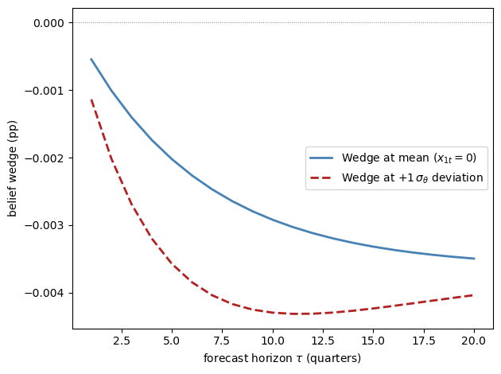
Fig. 30.9 multi-period belief wedge profile#
The horizontal axis is the forecast horizon, from one quarter ahead to twenty quarters ahead.
The blue line is the multi-period wedge evaluated at the mean state, and the red dashed line evaluates the same wedge after a one-standard-deviation increase in the belief shock.
Both wedges are negative because the state is consumption-like (\(v_x > 0\)): pessimists under-forecast consumption, the mirror image of the positive unemployment and inflation wedges in the survey data.
The blue line isolates the constant-term gap \(\tilde G_0^{(\tau)} - G_0^{(\tau)}\): each period the subjective law of motion adds the drift \(\tilde\psi_q\), compounded through the subjective persistence, so the wedge deepens with the horizon and flattens toward the long-run limit \(\tilde\psi_q / (1 - \tilde\psi_x)\) — the gap between the subjective and objective unconditional means.
Pessimism therefore distorts long-horizon forecasts more than short ones, until mean reversion saturates the accumulation.
The red line adds the slope contribution \((\tilde\psi_x^{\tau} - \psi_x^{\tau})\, x_{1t}\), and this term explains its hump shape: a difference of two geometric decays is zero at \(\tau = 0\), largest in magnitude at intermediate horizons, and vanishing again as both powers die out.
The extra pessimism thus deepens the wedge most at medium horizons (around ten quarters here), after which the red line climbs back toward the same asymptote as the blue line: today’s elevated pessimism is transitory, so it cannot move very-long-horizon forecasts, which are pinned down by the steady-state wedge.
30.8.2. The series expansion#
The main text used three results without full derivation: the re-centred shock distribution, the Riccati equation for \(v_x\), and the claim that belief distortions survive linearization only if \(\theta_t\) is scaled jointly with shock volatility.
This section derives them and explains how Bhandari et al. [2025] solve the full general-equilibrium model, using a series expansion (perturbation) method in the tradition of Borovčka and Hansen [2014].
Three problems have to be solved in turn.
First, the model must be expanded around its deterministic steady state in a parameter that scales shock volatility; this step is standard.
Second, the expansion must be modified so that the belief distortion appears at first order instead of being truncated away by certainty equivalence.
This is the joint perturbation of the shock volatility \(\mathsf{q}\) and the penalty parameter \(\theta_t\), the paper’s key methodological innovation.
Third, the distorted expectations must be embedded in the model’s equilibrium conditions, which couples the unknown policy matrices to the continuation value and modifies the standard Blanchard–Kahn solution.
A final subsection extends the method to the specification the quantitative model actually uses, in which the belief factor is an exogenous AR(1) process.
30.8.2.1. Law of motion#
The first step is to parameterize how volatile the world is.
Index the model by a scalar perturbation parameter \(\mathsf{q}\) that scales shock volatility:
Here \(\mathsf{q} = 1\) is the model of interest and \(\mathsf{q} = 0\) is a deterministic economy.
Expanding around \(\mathsf{q} = 0\) gives
The first-order dynamics are
A first-order solution keeps only \(\bar x\) and \(x_{1t}\), and the main text explained the cost of that truncation: the optimal belief distortion works through the variance of continuation values, so it is second order in \(\mathsf{q}\) and would be discarded.
30.8.2.2. Continuation value and the Riccati equation#
The fix makes the agent’s taste for distortion grow exactly as fast as the scope for distortion shrinks.
The penalty parameter is jointly scaled with \(\mathsf{q}\): the effective penalization in the perturbed recursion is \(\mathsf{q}/[\bar\theta(\bar x + x_{1t})]\), which shrinks together with shock volatility.
Because the optimal drift is the product of the penalty parameter and the shock exposure of continuation values, scaling one up as the other scales down keeps the drift at order one, so the subjective model remains distinct from the data-generating process in the first-order solution.
Guessing \(v_{1t} = v_x x_{1t} + v_q\) and matching coefficients yields the Riccati equation for \(v_x\):
and the constant
The slope equation is the modified Riccati equation read term by term in the main text.
The constant equation shows where any fixed component of pessimism goes: the variance penalty evaluated at the steady state, proportional to \(\bar\theta \bar x\), shifts only \(v_q\) — Case 1 of the scalar illustration again.
The Riccati equation is quadratic in \(v_x\).
For the stationary scalar case it reduces to
30.8.2.3. Shock distribution under subjective beliefs#
With \(v_x\) in hand, the optimal distortion \(m_{t+1}^* \propto \exp(-\theta_t v_{t+1})\) can be evaluated along the expansion.
Substituting the first-order expansion into the distortion formula shows that the leading term \(m_{0,t+1}\) is a lognormal change of measure.
With Gaussian shocks, this is equivalent to shifting the innovation mean as follows:
Belief wedges for the state vector follow immediately:
These are the mean-shift and wedge formulas of the main text, now derived with the belief factor evaluated at its first-order expansion \(\theta_t = \bar\theta(\bar x + x_{1t})\).
30.8.2.4. Equilibrium conditions with subjective beliefs#
So far the law of motion \(\psi\) was taken as given, but in equilibrium it is itself determined by optimality and market-clearing conditions, some of which involve subjective expectations.
The full model’s equilibrium conditions take the form
where \(\mathbb{M}_{t+1} = \mathrm{diag}(m_{t+1}^{\sigma_1}, \ldots, m_{t+1}^{\sigma_n})\) selects which equations involve subjective expectations (\(\sigma_i = 1\)) versus objective ones (\(\sigma_i = 0\)).
This equation-by-equation switch is what makes experiments like the rational-firms variant possible: belief distortions can be turned off in firms’ equations while households remain pessimistic.
First-order expansion of these conditions gives a system in the unknown policy matrices \(\psi_x, \psi_w, \psi_q\):
where the belief distortion matrix \(\mathbb{D}\) collects the impact of subjective expectations on each equation:
(We write \(\mathbb{D}\) for this matrix to avoid confusion with the expectation operator \(E_t\).)
Row \(i\) of \(\mathbb{D}\) is nonzero only if equation \(i\) uses subjective expectations, and it equals that equation’s exposure to next period’s shocks, \([g_{x^+}\psi_w + g_{w^+}]^i\), times the vector \((v_x \psi_w)' \bar\theta\) that governs the optimal mean shift.
These equations are solved jointly with the Riccati equation for \(v_x\): the policy matrices determine the continuation value’s exposure to shocks, and that exposure feeds back into the policy matrices through \(\mathbb{D}\).
Compared with the standard Blanchard–Kahn solution, the only modification is the additive term \(-\mathbb{D}\) that shifts the characteristic matrix; when \(\bar\theta = 0\) we recover the standard rational-expectations solution.
30.9. Summary#
The lecture has built the mechanism from the survey object to the model object.
A belief wedge is the difference between a subjective forecast and an objective forecast.
In the data, the unemployment and inflation wedges are positive on average, countercyclical, and well described by one common factor.
Multiplier preferences generate exactly this kind of common factor: a higher \(\theta_t\) makes agents overweight states with low continuation value.
With Gaussian shocks, the optimal change of measure is especially simple: it shifts the mean of the innovation by \(-\theta_t (v_x \psi_w)'\).
This mean shift implies belief wedges that are proportional to \(\theta_t\) and to the covariance between shocks and continuation values.
In the New Keynesian application, the same belief shock raises unemployment, creates comoving unemployment and inflation forecast wedges, and helps close the unemployment volatility gap left by TFP and monetary-policy shocks alone.
The survey wedges do double duty: they calibrate the belief-shock process, and their joint behavior across variables, means, comovement, cyclicality, and forecast-error predictability, over-identifies and thereby tests the model.
30.10. Exercises#
Exercise 30.1
Belief wedge sign
In the simple endowment economy built by create_belief_model, suppose the
state variable is log consumption \(x_t\) with \(\rho_x = 0.90\), \(\sigma_x = 0.01\),
\(\beta = 0.99\).
Compute \(v_x\) under rational expectations and under pessimism \(\mu_\theta = 4\).
What is the sign of the belief wedge for consumption growth?
If instead the agent forecasts unemployment (which enters the value function with a negative sign, so \(u_x < 0\)), what is the sign of the unemployment belief wedge?
Solution
Part 1. Under rational expectations (\(\theta = 0\)):
β_ex = 0.99
ρ_x_ex = 0.90
σ_x_ex = 0.01
μ_θ_ex = 4.0
vx_re_ex = (1 - β_ex) / (1 - β_ex * ρ_x_ex)
print(f"v_x (rational expectations): {vx_re_ex:.6f}")
m_ex = create_belief_model(β=β_ex, ρ_x=ρ_x_ex,
σ_x=σ_x_ex, μ_θ=μ_θ_ex)
print(f"v_x (with pessimism θ_bar={μ_θ_ex}): {m_ex.vx:.6f}")
print(f"difference: {m_ex.vx - vx_re_ex:.2e}")
v_x (rational expectations): 0.091743
v_x (with pessimism θ_bar=4.0): 0.091728
difference: -1.53e-05
The two slopes differ only in the fifth decimal place: the quadratic term in the Riccati equation is scaled by \(\sigma_x^2\), so at this calibration pessimism only reduces the marginal value of the state by a small amount.
Part 2. Under pessimism (\(\theta_t > 0\)), the consumption wedge is
Since \(v_x > 0\) and \(\theta_t > 0\), the wedge is negative: pessimistic agents underestimate consumption growth relative to the model.
Part 3. For unemployment, \(u_x < 0\), so \(v_x^u < 0\).
The belief wedge becomes
(positive, because pessimism makes agents over-estimate unemployment). This matches the empirical finding of a positive mean unemployment wedge.
Exercise 30.2
Persistence and wedge volatility
Using create_belief_model, vary \(\rho_\theta\) from 0.3 to
0.95 (holding \(\sigma_\theta = 4.3\) fixed) and plot how the standard
deviation of the belief wedge changes.
Explain the economic intuition.
Solution
ρ_vals = np.linspace(0.3, 0.95, 30)
wedge_stds = []
for ρ in ρ_vals:
m_temp = create_belief_model(ρ_θ=ρ)
θ_sim_temp = simulate_θ(m_temp, T=5000, seed=0)
wedge_sim_temp = belief_wedge(m_temp, θ_sim_temp)
wedge_stds.append(np.std(wedge_sim_temp))
fig, ax = plt.subplots()
ax.plot(ρ_vals, np.array(wedge_stds) * 100, color='steelblue', linewidth=2)
ax.set_title('Persistence and belief-wedge volatility')
ax.set_xlabel('persistence $\\rho_\\theta$')
ax.set_ylabel('standard deviation of belief wedge (pp)')
plt.tight_layout()
plt.show()
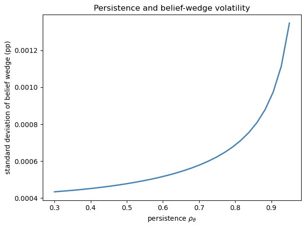
The figure plots the persistence parameter \(\rho_\theta\) on the horizontal axis and the simulated standard deviation of the belief wedge on the vertical axis.
The curve slopes upward.
Higher persistence \(\rho_\theta\) means that a given innovation to \(\theta_t\) has more prolonged effects: the unconditional variance of an AR(1) with volatility \(\sigma\) is \(\sigma^2 / (1 - \rho^2)\), which increases in \(\rho\).
Since the wedge is proportional to \(\theta_t\), its standard deviation inherits this relationship and rises with \(\rho_\theta\).
Exercise 30.3
Unemployment volatility decomposition
Using the reduced-form NK model built by create_nk_model:
Compute the fraction of unemployment variance explained by each of the three shocks.
Show that the belief shock is the dominant driver of unemployment fluctuations, while TFP shocks matter much more for inflation and output than they do for unemployment.
Solution
shock_names = ['Belief shock (θ)', 'TFP shock', 'MP shock']
var_labels = ['Unemployment', 'Inflation', 'Output']
nk2 = create_nk_model()
n_states = nk2.A.shape[0]
var_by_shock = np.zeros((n_states, 3))
for j in range(3):
B_j = np.outer(nk2.B[:, j], nk2.B[:, j])
Σ_j = solve_discrete_lyapunov(nk2.A, B_j)
var_by_shock[:, j] = np.diag(Σ_j)
var_total = var_by_shock.sum(axis=1)
print(f"{'Variable':<16}", *[f"{s:>20}" for s in shock_names])
print('-' * 77)
for i, label in zip([I_U, I_PI, I_Y], var_labels):
shares = var_by_shock[i] / var_total[i] * 100
print(f"{label:<16}", *[f"{s:>19.1f}%" for s in shares])
Variable Belief shock (θ) TFP shock MP shock
-----------------------------------------------------------------------------
Unemployment 84.3% 15.5% 0.1%
Inflation 27.1% 72.7% 0.2%
Output 51.2% 48.7% 0.1%
The belief shock accounts for the large majority of unemployment variance in this calibrated emulator.
Technology shocks drive most of the inflation variance, and output variance is split roughly evenly between the belief and TFP shocks.
Monetary policy shocks play a negligible role for all three variables.
This pattern matches the variance decomposition of the structural model, in which the belief shock dominates unemployment while technology shocks account for most of the variation in inflation.
Exercise 30.4
Changing the degree of pessimism
Solve the Riccati equation (solve_vx) for a grid of
\(\mu_\theta\) values from 0 (rational expectations) to 15.
For each value, compute the scaled subjective drift \(\nu / \sigma_x = -\mu_\theta v_x\) and the steady-state belief wedge.
Discuss how the robust value function differs from the rational-expectations value function.
Solution
μ_grid = np.linspace(0, 15, 100)
drift_norm = []
wedge_ss = []
for μ in μ_grid:
m_temp = create_belief_model(μ_θ=μ)
drift_norm.append(-μ * m_temp.vx)
wedge_ss.append(belief_wedge(m_temp, μ) * 100) # in pp
fig, axes = plt.subplots(1, 2, figsize=(11, 4))
fig.suptitle('Subjective drift and steady-state wedge')
axes[0].plot(μ_grid, drift_norm, color='steelblue', linewidth=2)
axes[0].axhline(0, color='grey', linestyle='--', linewidth=0.8)
axes[0].set_xlabel('mean pessimism $\\mu_\\theta$')
axes[0].set_ylabel('scaled drift $\\nu / \\sigma_x$')
axes[1].plot(μ_grid, np.array(wedge_ss), color='firebrick', linewidth=2)
axes[1].set_xlabel('mean pessimism $\\mu_\\theta$')
axes[1].set_ylabel('steady-state wedge (pp)')
plt.tight_layout(rect=[0, 0, 1, 0.94])
plt.show()
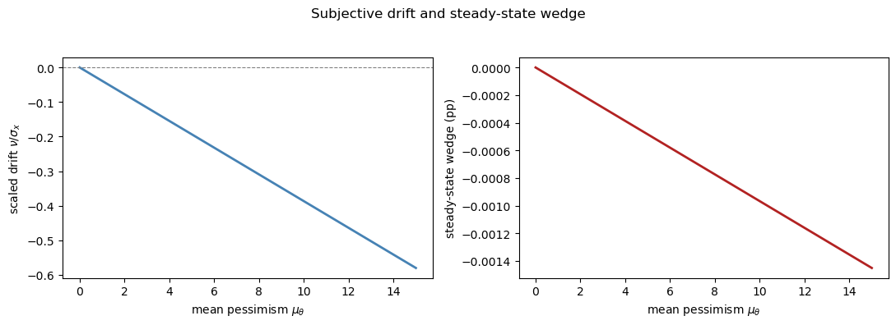
The left panel plots the scaled subjective drift \(\nu / \sigma_x = -\mu_\theta v_x\).
The right panel plots the corresponding steady-state belief wedge.
The scaled drift is the horizontal shift used in the shock-distribution figure above, so it is easier to see than the tiny movement in \(v_x\) itself.
The steady-state consumption wedge becomes more negative, approximately linearly in magnitude, since \(\Delta^{(1)} \propto -\mu_\theta v_x \sigma_x^2\) and \(v_x\) is approximately constant for small \(\mu_\theta\).
Finally, consider how the robust value function itself changes with \(\mu_\theta\).
vx_0 = create_belief_model(μ_θ=0).vx
vx_15 = create_belief_model(μ_θ=15).vx
print(f"v_x at μ_θ = 0: {vx_0:.8f}")
print(f"v_x at μ_θ = 15: {vx_15:.8f}")
print(f"relative change: {(vx_15 - vx_0) / vx_0:.2e}")
v_x at μ_θ = 0: 0.03868472
v_x at μ_θ = 15: 0.03868292
relative change: -4.65e-05
The slope \(v_x\) falls as \(\mu_\theta\) rises — the quadratic term in the Riccati equation lowers the marginal value of the state — but the change is on the order of \(10^{-5}\) in relative terms, because the quadratic term is scaled by \(\sigma_x^2\).
The robust value function therefore differs from its rational-expectations counterpart mainly through the constant \(v_q\), which falls as the variance penalty grows.
Because \(v_x\) is nearly constant, the drift and the wedge are approximately linear in \(\mu_\theta\), which is what both panels show.